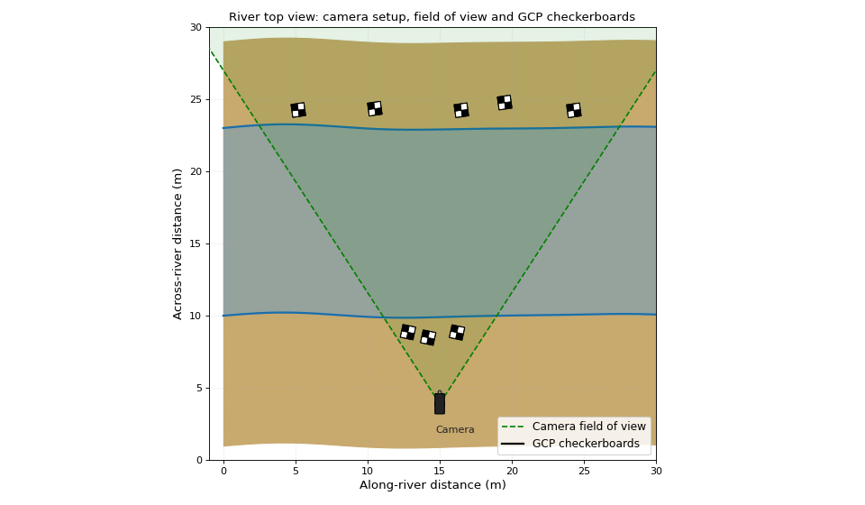

Camera pose#
Note
The camera pose is another word for the position and orientation of the camera in the world frame. It is used to understand how far each pixel on the water surface is from the camera. The camera pose is always estimated in a chosen coordinate system, and can be estimated by using several Ground Control Points (GCPs) as calibration targets. At minimum 6 GCPs are needed to estimate the camera pose, but more GCPs will lead to a more accurate estimation.
Your camera lens may be made such that it “bends” light coming into the lens. This has a purpose: it allows the camera to have a wider field of view. However, this also means that the image captured by the camera will be distorted. This distortion can also be described by a set of parameters. These parameters can be constrained along with the position and orientation, provided that there is enough control information in the calibration targets. 8 GCPs is a good number for this.
The control points must be clearly identifiable in the camera objective. Make sure you can find them in your sample video and that they are well spread over the objective. The figure below gives an example, and more guidance how to spread and collect control points is given in the field survey documentation.
(Source code, png, hires.png, pdf)
{kind=link}
{kind=link}

Top-view of ground control points.#
To perform the calibration of the pose using the GCPs, go through the following steps:
Go to the “Camera pose” tab.
Load the GCPs from a .csv file (see the note on the format below) or manually enter them into a list in the designated area. You can add points using the “+ Add point” button. Make sure you DO NOT mix up X and Y coordinates, as this will result in a mirrored view on your GCPs.
Once all GCPs are added, click on the dot left of the first point to start identifying which pixels in the video objective correspond to the GCPs. The point will become solid, and then you can click on the corresponding pixel in the video objective.
The solid colored point moves down to the next automatically. Click on the next points to complete the table. Check the example below what this looks like after having clicked all points.
If you make a mistake, no problem, just click on the dot left of the point you wish to modify and click again on the desired pixel on your GCPs.
Tip
Try to do this accurately! Take your time, relax, zoom in and out with your scroll wheel to be able to select the pixels more accurately.
Check the Top view to see how your points were ordered. You MUST ensure you select the right pixel with the right coordinate, otherwise your calibration will seriously fail! Selecting points in the wrong order and therefore mismatching real-world and image coordinates is the most likely culprit for very large errors and must be corrected before continuing.
Use the rainbow color coding and/or numbering to identify if the chosen point corresponds with the right coordinates.
After you are satisfied, we recommend clicking on the “Save” button to ensure you do not loose any work. The GCPs are always stored with each Video configuration so that you can track back what you did in previous work.
Note
the CSV file format used for GCPs and cross-section coordinates is the same and has to follow these strict rules.
Coordinate files must have three columns strictly named “X”, “Y” and “Z” for the horizontal (x, y) coordinates and vertical (z) coordinates respectively. Lower case naming is also accepted.
X, Y and Z coordinates MUST be in a meter unit projection. If your measurements are in another unit, you must convert them to meters before uploading. E.g. GNSS devices usually return WGS84 latitude - longitude coordinates in degrees. You may e.g. project these to a UTM projection using QGIS. In this process, make sure that all coordinate files for one video configuration are converted into the same meter unit projection.
X and Y should follow the horizontal directions left-right (positive-X), and backward-forward (positive-Y), e.g. west-east and south-north respectively. Positive-Z is in upward direction always! GPS and the Disto P2P systems always follow this convention automatically. Note that x-y can be any perpendicular directions you wish as long as they follow the horizontal plane.
For cross-section coordinate files: the points must be ordered from left to right or right to left bank. If the points are not ordered, you will not receive an error, but results will become very very unpredictable! Order your points (e.g. in excel) before uploading or (easier) just make sure you go in one direction only while surveying.
You can supply a file with more columns, containing for instance ID, notes, names of each point etc. taken during the survey, or any other information you may wish to save. It should be noted however, that these details will not be stored in the database. Save your files as a backup!
An example of the CSV format is given below. The file must at least contain the column names x, y, z with the rows giving the respective coordinates of the GCPs. You can add any other column with GCP properties but these are not loaded or saved in the camera calibration record.
name,x,y,z
gcp1,10.23,5.10,0.15
gcp3,15.10,15.22,1.22
gcp2,20.67,5.78,0.30
gcp4,... and so on
Now that all your points are selected, the “Validate” button becomes available. This only happens when two conditions are met:
you have at minimum 6 GCPs.
all GCPs have a X, Y, Z coordinate and a selected row and column.
Click on the “Validate” button. After a few seconds, you will see colored “+” signs appear roughly on top of the selected pixel GCPs, and you will see a message in the “Camera pose” tab, indicated how large the absolute average error is on each GCP. The validation procedure does this by estimating the pose, and reconstructing the real-world coordinates from the pixel coordinates and finally, estimating how far apart these are from your field measurements. If this error is larger than 0.1 meter, the message will be an orange colored warning and you may want to change or resurvey. Good measurements should result in an error of around 0.05 meters.
Tip
If your area of interest and distances between GCPs are very large, an error of 0.1 meters is not necessarily a large problem. In fact, larger errors are expected with larger areas of interest.
If you have large errors and this is not expected, carefully check where the “+” signs in the Camera view are much apart from the selected pixels. These are the likely culprits of the bad fit. If you have a large error and you are not able to rectify this, then consider leaving out one or two points from your calibration if you have sufficient targets. This leads to better results than simply leaving them in. DO NOT continue until you have a satisfactory calibration. Poor calibration will result in poor, highly unexpected, or no results at all.
Leave your GCPs in place while checking the camera pose and validation. If errors are large, you can still resurvey before taking out the GCPs.